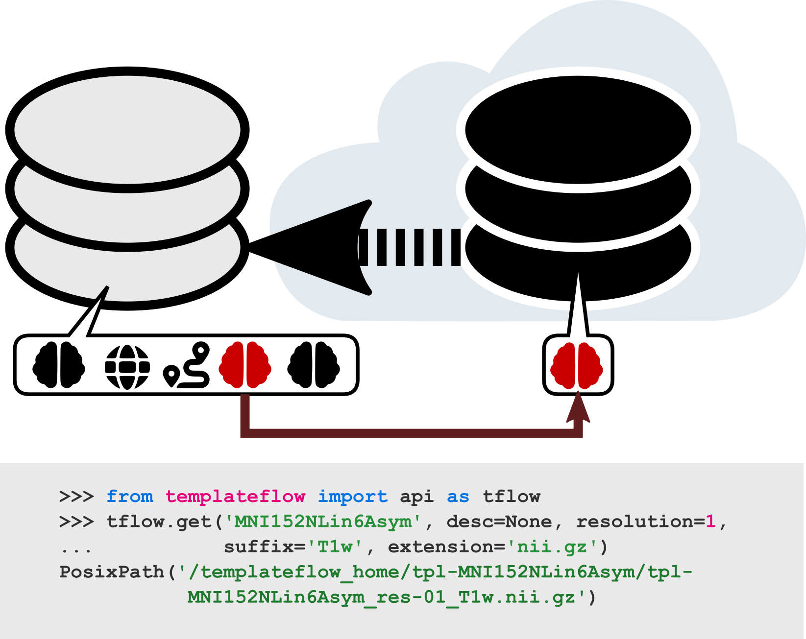

Python Client
About the Python client¶
The Python client provides an easy to use tool to integrate the TemplateFlow Archive into Python code and notebooks. The Python client uses PyBIDS to index and query the TemplateFlow Archive. A practical example of how this operates follows:
>>> from templateflow import api as tflow
>>> tflow.get('MNI152NLin6Asym', desc=None, resolution=1,
... suffix='T1w', extension='nii.gz')
PosixPath('/templateflow_home/tpl-MNI152NLin6Asym/tpl-MNI152NLin6Asym_res-01_T1w.nii.gz')
Lazy loading of templates¶
The client only pulls the template data the first time those are requested. The first time we run the above commands in python, we will see how the client connects to the archive and pulls down a copy. The second time the command is executed, the local copy is found and retrieved without further Internet access.
Caution
In computing environments isolated from the Internet (a common case on academic high-performance computing), please fetch all the templates you will need from the node where you can access the Internet during installation.
TemplateFlow and Singularity Containers
Singularity containers are a special case of isolated environment. These containers are usually executed without privileged permissions and on those settings, the default home folder (see below) will be non-writable. Please check fMRIPrep's documentation for further information on how to use TemplateFlow within Singularity.
The Python client in a nutshell¶
|  |
|---|
| Example usage of the Python client. After importing the API, the user submits a query for the T1-weighted FSL version of the MNI template at 1 mm resolution. The client first filters through the archive, identifies any files that match the query, and finds their counterparts in cloud storage. It then downloads the requested files and returns their paths in the local TemplateFlow installation directory. Future queries for the same resource can be completed without any re-downloading. |
Installation¶
Before you start¶
By default, the local cache of the archive is stored under $HOME/.cache/templateflow.
If you need to change the location of the local copy, make sure you set the TEMPLATEFLOW_HOME
environment variable:
export TEMPLATEFLOW_HOME=/var/local/templateflow
Please make sure you have read and write permissions on the folder you designate as home.
Mode of operation¶
The client can operate directly with DataLad or just download templates from a
mirror of the archive stored on a public S3 bucket.
Using the latter option rules out administering the local copy of the archive with DataLad.
By default, the environment variable TEMPLATEFLOW_USE_DATALAD will be set to off.
In other words, the default mode of operation is direct download.
To enable the DataLad-base operation, make sure you set the environment variable:
export TEMPLATEFLOW_USE_DATALAD=on
Valid values for this environment variable to enable DataLad are 1, y, on, yes, true.
Installing the Python package with Pip¶
The TemplateFlow Client only works with Python 3.6 or greater.
$ python3 -m pip install templateflow
Checking the installation¶
$ python -c "import templateflow as tf; print(tf.__version__)"
0.6.0
FAQ¶
Custom (study / population specific) templates¶
As Chris noted in this fundamental thread:
Custom (volume and surface) templates derived from a particular dataset have been shown to improve overlap between participants. It is also the recommended way to deal with smaller head sizes in developmental populations. Both ANTs and FreeSurfer support building such templates.
It is possible to integrate custom templates into TemplateFlow in two steps:
- Organize your template accordingly.
- Copy the custom template tree into the
$TEMPLATEFLOW_HOMEdirectory.
Please make sure you include all the necessary files and resolutions that then will be utilized by downstream software.
Why am I getting zero-sized NIfTI files?¶
(From: templateflow/tpl-MNI152NLin2009cAsym#7)
If you just installed TemplateFlow without explicitly setting the DataLad mode of operation on, then it will be using the S3 backend. To allow lazy loading, S3-operated client installations deploy an archive skeleton to the TemplateFlow Home directory. This skeleton contains zero-size files, that are replaced by the appropriate content pulled down from S3 on the first utilization.
So, if you just installed the client, and want to open a particular template image with the Mango visualization tool, instead of just doing:
$ mango ${TEMPLATEFLOW_HOME:-$HOME/.cache/templateflow}/tpl-MNI152NLin6Asym/tpl-MNI152NLin6Asym_res-01_T1w.nii.gz
Please make sure you use the client to access the image, for instance:
$ mango $( python -c "from templateflow.api import get; \
print(str(get('MNI152NLin6Asym', resolution=1, suffix='T1w', desc=None, extension='nii.gz')))" )
A pretty close behavior will be expected when operating in DataLad mode, although instead of getting zero-sized files, you'll probably get a straight file not found error.
Documentation for developers¶
The client is thought out to be integrated in higher-level neuroimaging workflows, such as fMRIPrep, MRIQC. Further details about the usage of the tool are found in the documentation.